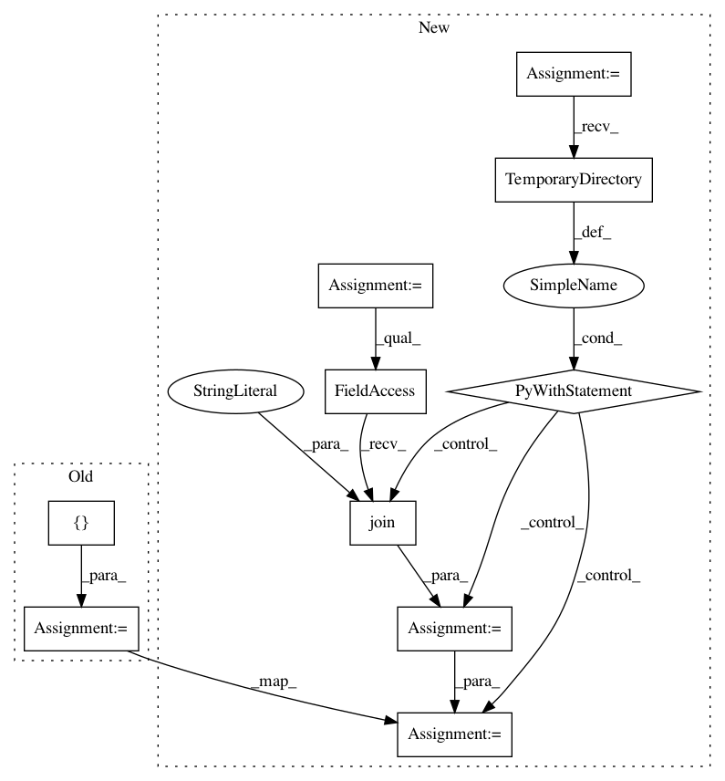

9309248e39a17098f8b22e07e2f4924deb0fd1a1,unittests/test_cli.py,TestFrontend,test_checkpath_symlink,#TestFrontend#,284
Before Change
num_checks_default = re.search(
r"Found (\d+) check", stdout, re.MULTILINE).group(1)
self.checkpath = ["unittests/resources/checks_symlink:"
"unittests/resources/checks"]
returncode, stdout, _ = self._run_reframe()
num_checks_in_checkdir = re.search(
r"Found (\d+) check", stdout, re.MULTILINE).group(1)
self.assertEqual(num_checks_in_checkdir, num_checks_default)
After Change
num_checks_default = re.search(
r"Found (\d+) check", stdout, re.MULTILINE).group(1)
with tempfile.TemporaryDirectory(dir="unittests") as tmp:
checks_link = os.path.join(tmp, "checks_symlink")
os.symlink(os.path.abspath("unittests/resources/checks"),
os.path.abspath(checks_link))
self.checkpath = ["unittests/resources/checks", checks_link]
returncode, stdout, _ = self._run_reframe()
num_checks_in_checkdir = re.search(
r"Found (\d+) check", stdout, re.MULTILINE).group(1)
self.assertEqual(num_checks_in_checkdir, num_checks_default)
def test_checkpath_recursion(self):
self.action = "list"
In pattern: SUPERPATTERN
Frequency: 3
Non-data size: 10
Instances
Project Name: eth-cscs/reframe
Commit Name: 9309248e39a17098f8b22e07e2f4924deb0fd1a1
Time: 2020-02-18
Author: manitaras@cscs.ch
File Name: unittests/test_cli.py
Class Name: TestFrontend
Method Name: test_checkpath_symlink
Project Name: ina-foss/inaSpeechSegmenter
Commit Name: fc730c7fdbf495715faf9a68325689ba73be059f
Time: 2020-05-09
Author: ddoukhan@ina.fr
File Name: run_tests.py
Class Name: TestInaSpeechSegmenter
Method Name: test_batch
Project Name: CyberReboot/NetworkML
Commit Name: 061a215e1898d7394930840065ce88f9b7884cb7
Time: 2020-01-16
Author: josh@vandervecken.com
File Name: tests/test_pcap_reader.py
Class Name:
Method Name: test_sessionizer